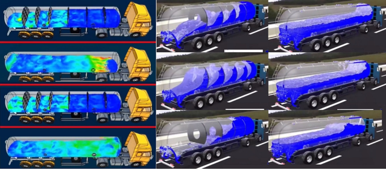
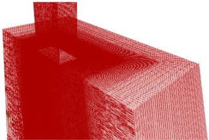
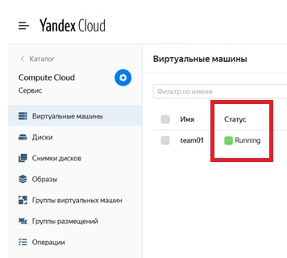
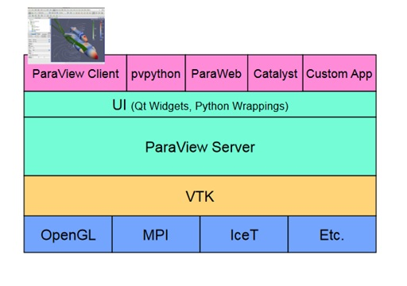
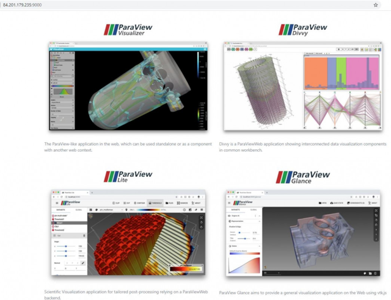
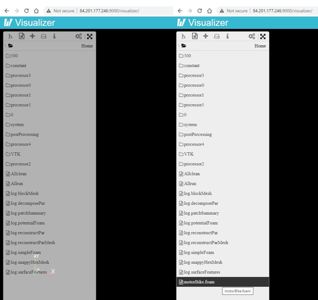
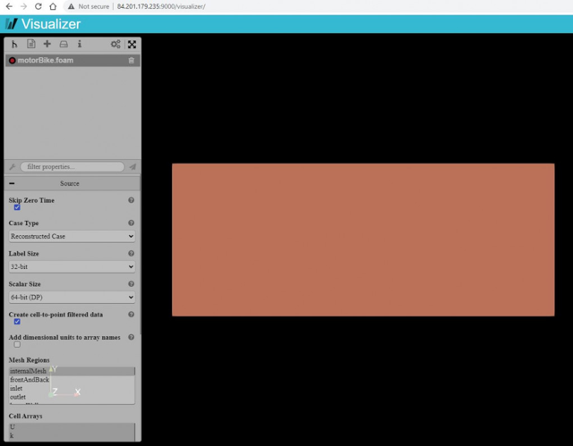
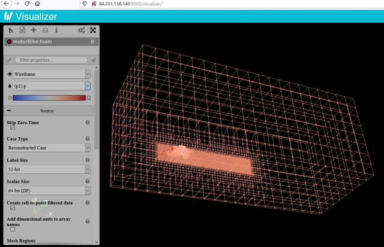
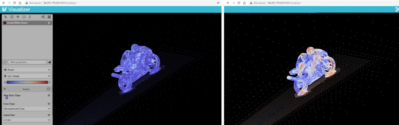
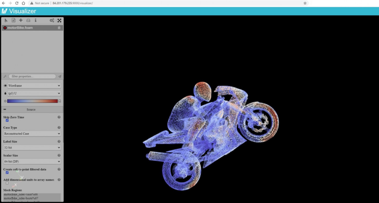

В статье я расскажу, как можно просто, быстро и дёшево собрать свой пакет моделирования задач гидродинамики в облаке. Сделаю я это с помощью комбинации двух инструментов: средства численного моделирования механики сплошных сред OpenFOAM, а также набора инструментов визуализации массивов данных ParaView.
Я обычный разработчик, и не являюсь специалистом в данной научной области. С этим видом задач я столкнулся впервые в рамках недавно прошедшего хакатона FIT-M 2020, где мне посчастливилось поучаствовать в качестве со-организатора и ментора. Опыт мне показался интересным, в частности из-за возможности прикоснуться к области высокопроизводительных вычислений (англ. High Performance Computing), которые часто запускают на суперкомпьютерах. Я разобрался как можно довольно быстро наладить запуск вычислений на сервере в облаке и посмотреть на результат прямо через браузер, хоть с планшета или телефона!
Мне показалось, что материалов на русском языке по теме визуализации результатов в web не так много, хотя сама по себе тема довольно полезная и интересная. Надеюсь, это пошаговое руководство поможет кому-то в их вполне практических ежедневных задачах. А может быть, это станет для кого-то первым шагом в новую и интересную область науки.
Я ставлю себе задачу показать саму возможность быстрой пуско-наладки вычислений, дать отправную точку, но ни в коем случае не построение полноценного web-приложения. Здесь не будет речи ни о потенциальной архитектуре таких решений, ни готового исходного кода. Решение наколеночное, но зато быстрое.
Представьте себе рейс, вылетающий из аэропорта. Как вы думаете, почему следующий самолёт ожидает некоторое время после того, как предыдущий уже давно в воздухе? Ответ прост: предыдущий взлёт оставил позади себя огромный водоворот воздуха, достаточно сильный, чтобы заставить следующий самолет стоять в очереди.
Следующий хороший вопрос: как узнать, когда эти водовороты воздуха достаточно уменьшатся? или, скорее, насколько слабой должна быть сила водоворота, чтобы следующий самолет взлетел?
Зная ответы на эти вопросы, вы сможете определить правильное время вылета вашего следующего рейса (конечно, если сотрудники службы поддержки аэропорта не побеспокоят вас чем-то еще).
На эти и подобные вопросы может попробовать ответить вычислительная гидродинамика (англ. Computational fluid dynamics — CFD). Точно измерить показатели атмосферы и учесть все процессы, происходящие во время взлёта самолёта довольно сложно. Для поиска ответов обычно применяют моделирование — симуляцию физических процессов с помощью специальных программных инструментов, таких как OpenFOAM (Open-source Field Operation And Manipulation). Его использование, очевидно, не ограничивается аэрокосмической областью. Применение крайне широкое, поэтому затрагивает и автомобильную и химическую промышленность, здравоохранение, спорт, морские исследования, производство электроэнергии и т.д. В зависимости от решаемой задачи применяются разные специализированные программные комплексы.

Применение CFD для расчёта снижения колебаний транспортируемой жидкости.
Если совсем кратко, то суть моделирования состоит в массивном параллельном вычислении показателей скорости, давления, плотности, температуры через множества дифференциальных уравнений. Для этого применяется, по сути, один и тот же метод, независимо от того, какая проблема рассматривается: метод «Разделяй и властвуй».

Пример сетки и ячеек.
Структурированные линии, которые вы видите на рисунке здания выше, называются сеткой (англ. mesh). Объемы правильной формы, образованные этими пересекающимися линиями, называются ячейками (англ. cells). На этих ячейках и производится поиск решения уравнений для интересующей нас переменной. Чем больше количество ячеек, тем более точные приближения даст моделирование (более плотная область на рисунке выше). Следовательно, мы разделяем проблему на ячейки и решаем уравнения в каждой. Затем, результаты складываются определенным образом, чтобы получить аппроксимированное решение над большей областью.
Обычно, программное обеспечение последовательно выполняет действия по этапам:
На этих этапах чаще всего используется не один, а сразу ряд инструментов. Например, геометрию и физические границы объекта во время подготовительного этапа определяют с помощью систем автоматизированного проектирования (САПР, англ. CAD). В результате данные могут быть обработаны таким образом, что станет технически возможным выделить и извлечь объем жидкости.
Однако, мы сфокусируемся непосредственно на этапе расчёта и визуализации результатов.
Инструмент OpenFOAM — это одно из наиболее известных open-source приложений, которое отвечает за этап расчёта. С его помощью можно использовать как можно большее количество аппаратных ресурсов компьютера, чтобы сократить время моделирования. Основные ресурсы в данном случае: это ядра процессора (англ. CPU) и оперативная память (англ. RAM). Графические процессоры (англ. GPU) особенно хорошо подходят для распараллеливания задач, так как содержат гораздо большее количество процессоров.
Установленный пакет программы идёт с несколькими заранее подготовленными примерами моделей для тренировки. Один из таких проектов-примеров мы и будем использовать. Он называется motorBike tutorial: это 3D-модель мотоциклиста в пространстве. Этот проект рассчитан на запуск расчёта в параллельном режиме на рабочей машине с шестью ядрами процессора (я покажу ниже, как это можно поменять).
Для начала создадим обычный виртуальный сервер с шестью vCPU. Для максимально конкретных примеров я буду использовать Яндекс.Облако, хотя абсолютно идентичным образом можно воспользоваться и облаком Amazon, Microsoft, IBM, и т.д.
$ ssh-keygen -t rsa -b 2048
По запросу введите пароль для приватного ключа. Публичная часть ключа будет сохранена в файле <имя>.pub, а приватная часть сохранена рядом в файле без расширения.

Работающая виртуальная машина.
$ ssh -i <имя_ключа> <имя_машины>@<публичный_ip_адрес>
В консоли нужно будет ввести пароль к приватному ключу, который вы указали при генерации.
$ sudo sh -c "wget -O - https://dl.openfoam.org/gpg.key | apt-key add -"
$ sudo add-apt-repository http://dl.openfoam.org/ubuntu
$ sudo apt-get update
$ sudo apt-get -y install openfoam8
В случае проблем, обращайтесь к официальному руководству.
$ vi ~/.bashrc
$ exit
$ simpleFoam -help
Если команда успешно распознана, то вы увидите описание и помощь по использованию этой команды пакета OpenFOAM.
Итак, после установки, примеры проектов лежат в папке /opt/openfoam8/tutorials/incompressible/simpleFoam/
$ cd $HOME
$ sudo mkdir -p $FOAM_RUN
$ cd $FOAM_RUN
$ sudo cp -r $FOAM_TUTORIALS/incompressible/simpleFoam/motorBike/ .
$ sudo chmod -R a+rwx motorBike
$ cd motorBike
$ ./Allrun
Этот скрипт выполняет последовательно все этапы вычислений, распараллеливания каждый из них. В консоли вы увидите следующий вывод:
team01@team01:~/OpenFOAM/team01-8/run/motorBike$ ./Allrun
Running surfaceFeatures on /home/team01/OpenFOAM/team01-8/run/motorBike
Running blockMesh on /home/team01/OpenFOAM/team01-8/run/motorBike
Running decomposePar on /home/team01/OpenFOAM/team01-8/run/motorBike
Running snappyHexMesh in parallel on /home/team01/OpenFOAM/team01-8/run/motorBike using 6 processes
Running patchSummary in parallel on /home/team01/OpenFOAM/team01-8/run/motorBike using 6 processes
Running potentialFoam in parallel on /home/team01/OpenFOAM/team01-8/run/motorBike using 6 processes
Running simpleFoam in parallel on /home/team01/OpenFOAM/team01-8/run/motorBike using 6 processes
Running reconstructParMesh on /home/team01/OpenFOAM/team01-8/run/motorBike
Running reconstructPar on /home/team01/OpenFOAM/team01-8/run/motorBike
Загляните в файл скрипта Allrun. Всё что он делает, это последовательно вызывает команды OpenFOAM, некоторые из которых параллелит. Эти команды можно выполнить и самому и проследить за прогрессом вычисления. А также можно запустить последовательное вычисление, вместо параллельного. Тогда вы увидите, насколько дольше происходит последовательный процесс (ну и папка результатов будет выглядеть чуть иначе):
$ blockMesh <-- генерируем сетку объектов и среды
$ decomposePar -copyZero <-- разделяем вычисления на части по количеству процессоров
$ snappyHexMesh -overwrite <-- генерируем сетку мотоциклиста с большей сложностью
$ potentialFoam <-- запускаем вычисление уравнений потенциальных параметров потоков
$ reconstruct... <-- собираем результаты воедино из частей
Выше я говорил о том, что количество процессоров для расчёта строго задано моделью. И речь именно о физических ядрах, а не виртуальных. Конфигурацию конечно можно поменять, но для этого необходимо хорошо и глубоко понимать структуру каталога задачи, форматы описания моделей и т.д. Например, для запуска описанных выше шагов на обычной машине с каким-нибудь Intel Core i7 (например, в Windows 10 WSL) нужно отредактировать файл задания, отвечающий за разделение задачи по количеству процессоров: /system/decomposeParDict
В этом файле надо поменять значения numberOfSubdomains и simpleCoeffs:
numberOfSubdomains 6; <-- Количество физических ядер процессора вашего ПК
method hierarchical;
// method ptscotch;
simpleCoeffs
{
n (4 1 1); <-- суммарно должно быть равно numberOfSubdomains
delta 0.001;
}
...
Пакет инструментов ParaView – это open-source решение для визуализации двух- и трехмерных наборов данных. Приложения и библиотеки ParaView могут быть гибко настроены и использованы в архитектуре вашего вычислительного решения, так как подразумевают разные варианты деплоя и использования. В частности, ParaView поддерживает как однопроцессорные, так и многопроцессорные платформы с распределённой памятью или кластеры вычислительных машин. Как и OpenFOAM, он позволяет параллелить обработку изображения для больших наборов данных. Известно, что ParaView успешно использовался для обработки результатов расчёта миллиардов и триллионов ячеек, будучи запущенным в параллельном режиме на машинах с сотней тысяч процессорных ядер.
Архитектура ParaView позволяет использовать его как для рендера результатов прямо на рабочей машине с графическим интерфейсом (вариант desktop), так и в браузере (вариант web).

Структура компонентов ParaView.
В основе ParaView лежит библиотека Visualization Toolkit (VTK), основанная на открытых библиотеках вроде OpenGL и MPI, которая предоставляет базовые алгоритмы визуализации и рендеринга. ParaView Server абстрагирует клиентские приложения (будь то desktop или web) от того как параллелится визуализация. Над ним есть ряд обёрток, написанных на Python или QT. Наконец, клиентскими модулями можно считать такие компоненты как:
Итого, у нас есть как минимум 3 варианта быстро посмотреть на результат расчётов OpenFOAM:
По третьему пути мы и пойдём. Чтобы собрать полноценно работающее решение, нужно хорошо ознакомиться с вариантами развёртывания. Начать ознакомление стоит с архитектуры, которая подразумевает использование web-сервера, а также API для параллельного запуска визуализации (в случае запуска в режиме multi-user). Опять таки, уже есть готовые скрипты на Python для запуска сессий визуализации. Схемы развёртывания описаны тут.
Однако, я обещал, что путь будет быстрый. Компания Kitware подготовила демо версию развёрнутого web-окружения в виде docker-контейнера. Это отличное начало, чтобы посмотреть, как всё работает. В их документации так же можно найти подробное описание того, как собрать свой собственный контейнер. Но мы просто подыщем один из готовых контейнеров с подходящей нам версией ParaView.
В зависимости от версии ParaView, интерпретатора Python и варианта рендеринга можно выбрать необходимый контейнер на dockerhub. В нашем случае выбор сделаем так:
Итого, нам нужен контейнер pvw-v5.7.1-osmesa-py2.
$ sudo apt install docker.io
$ export DEMO_HOST=84.201.179.235 <-- публичный IP виртуального сервера
$ export DEMO_PORT=9000 <-- порт на котором будет "торчать" контейнер
$ export IMAGE_TO_RUN=kitware/paraview:pvw-v5.7.1-osmesa-py2 <-- полное имя контейнера
$ mkdir -p demo
$ cd demo
$ curl -OL https://github.com/Kitware/paraviewweb-demo/archive/master.zip
$ unzip master.zip
$ sudo docker pull kitware/paraview:pvw-v5.7.1-osmesa-py2
$ sudo docker run -v /home/team01/OpenFOAM/team01-8/demo/paraviewweb-demo-master/pvw:/pvw -v /home/team01/OpenFOAM/team01-8/run/motorBike:/data -p 0.0.0.0:9000:80 -e SERVER_NAME="${DEMO_HOST}:${DEMO_PORT}" -e PROTOCOL="ws" -ti ${IMAGE_TO_RUN}
http://84.201.179.235:9000

Развёрнутые web-приложения ParaViewWeb.
Выбираем левое верхнее приложение Visualizer и после загрузки выбираем в левой панели "список файлов". Файлов много и здесь довольно трудно сразу сообразить, что именно запустить на отображение и на самом деле ответ такой: пока нечего запускать.
По умолчанию OpenFOAM формирует свои результаты расчёта в "сыром виде". Чтобы ParaView смог правильно загрузить данные, нужно воспользоваться скриптом, который загрузит специальный плагин ParaView, умеющий читать данные Open FOAM. В варианте desktop это делается одной командой в папке результатов OpenFOAM:
$ paraFoam
После запуска этой команды вы увидите одно небольшое изменение: в папке с файлами появится пустой файл с расширением *.foam. Именно он является своеобразным якорем, от которого отталкивается плагин ParaView при загрузке.
Но на сервере нет возможности запустить приложение с GUI интерфейсом, а поэтому и команда paraFoam "упадёт" с ошибкой невозможности подгрузить библиотеки QT.
Поэтому, мы просто эмулируем создание якорного файла:
$ touch motorBike.foam
Да, мы создали обыкновенный пустой файл в папке с результатами расчёта OpenFOAM. И этого достаточно для загрузки всей модели и результатов расчёта в ParaViewWeb.

Просто перезагрузите страницу в браузере и сделайте двойной клик по только что созданному файлу.

Только что загруженная расчётная модель в ParaViewWeb
Всё что остаётся дальше: это разобраться с фильтрами полигонов и отображаемых данных.



После расчёта сразу видны области наибольшего соприкосновения потока воздуха с частями мотоцикла и мотоциклиста. Если поменять задание, то можно получить и другие данные. Я намеренно не описывал структуру каталога модели, а так же папки и файлы результатов. Я думаю, что эта информация уже чуть более специфична для конкретной задачи. Моей целью было показать возможность запуска вычислений в облаке и отображения результатов в браузере. И этого мы достигли.
Думаю, что выполненная настройка даёт любому опытному разработчику необходимый плацдарм для начала работы над более полным web-приложением. Остаётся лишь доработать возможность загрузки заданий через Web каким-нибудь POST HTTP запросом и автоматизировать запуск команд OpenFOAM на бекенде по примеру, который мы опробовали. Опять-таки, нужно ознакомиться и опробовать более продвинутые варианты развёртывания упомянутых инженерных программ.
Облачные провайдеры постоянно снижают стоимость использования своих ресурсов и наращивают инструментарий. Например, совсем недавно Amazon расширил и улучшил возможности использования лямбд (AWS Lambda):
Всё это открывает интересные возможности для некоторых типов задач и вариантов использования.
50 лет назад мечтатели решили, что у каждого в доме должен быть компьютер. Теперь задачи стали сложнее, данных больше, а инженерное программное обеспечение доступнее. Пришло время, чтобы у каждого в доме появился свой суперкомпьютер. Конечно, начинаем мы с того, что есть под рукой в легкой доступности — это облачные ресурсы, но ведь это только начало.
Конечно, OpenFOAM и ParaView не являются единственными доступными инженерными программными пакетами для моделирования. Их уже очень много. Но из-за сложности настройки, как правило, специалисты и учёные, занимающиеся такими расчётами, просто изучают один инструмент и пытаются применить его во всех задачах. Если сделать инструменты доступнее, то я полагаю, мы увидим гораздо больше применения моделирования в нашей жизни, а это бывает очень полезно.